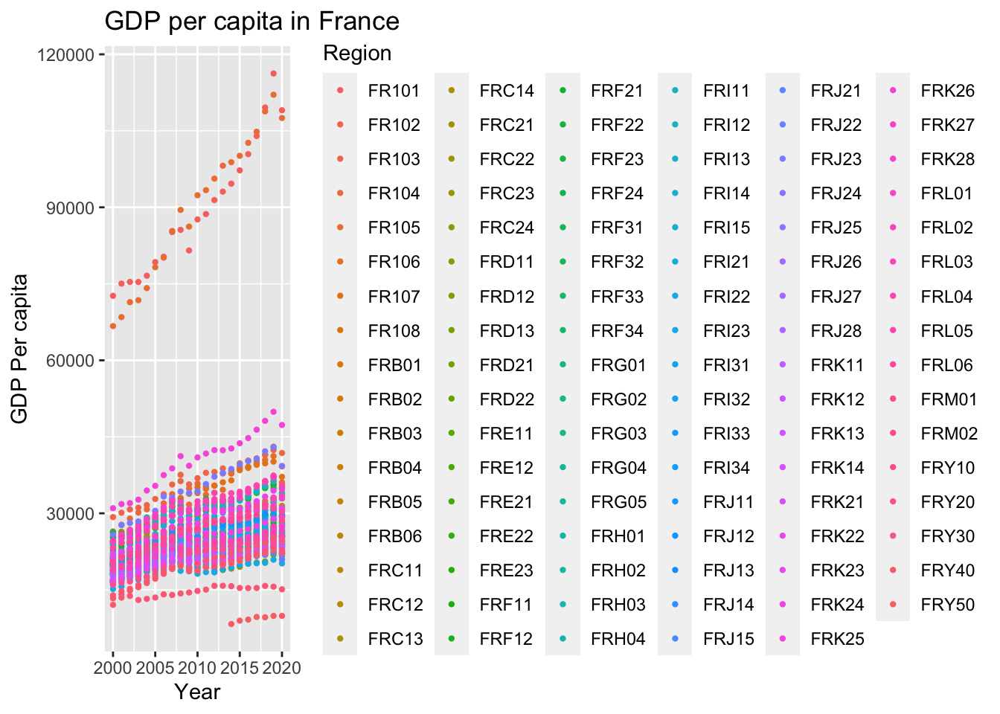
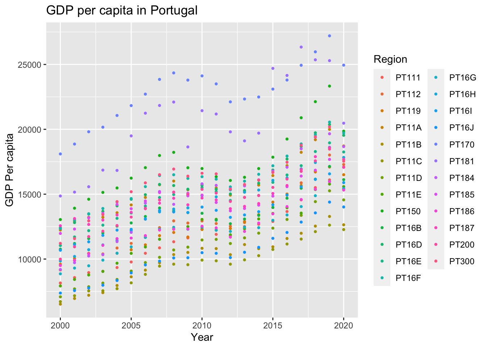
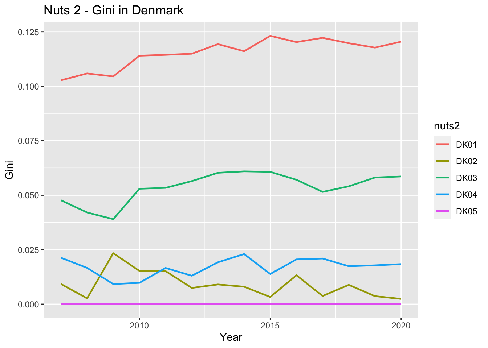
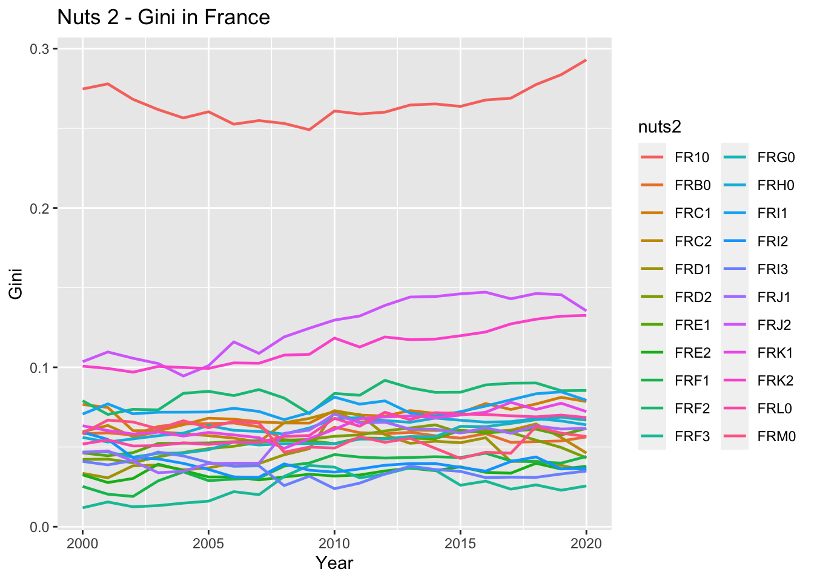
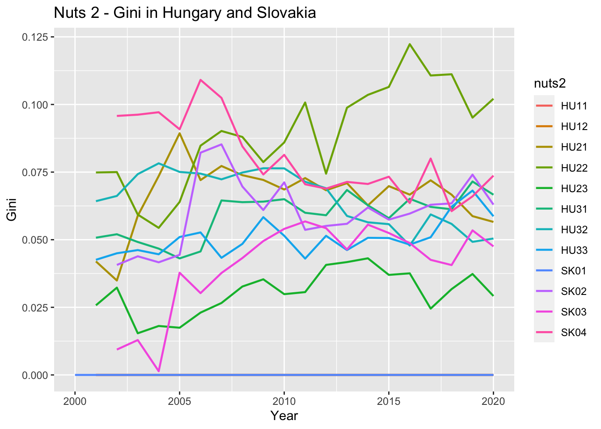
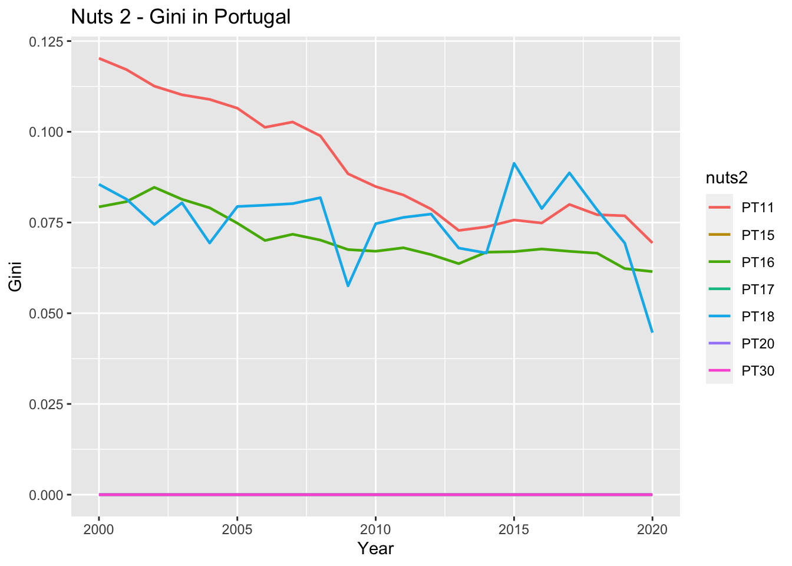
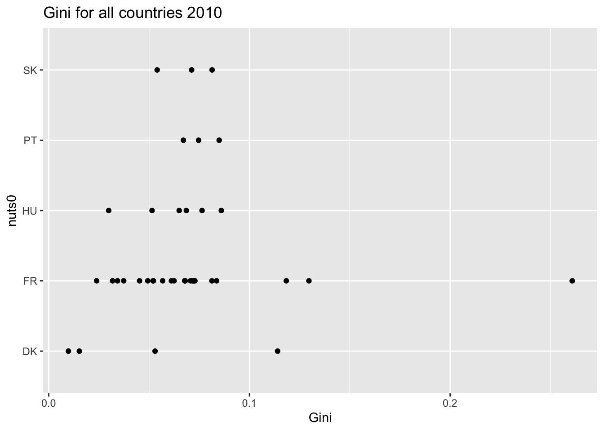
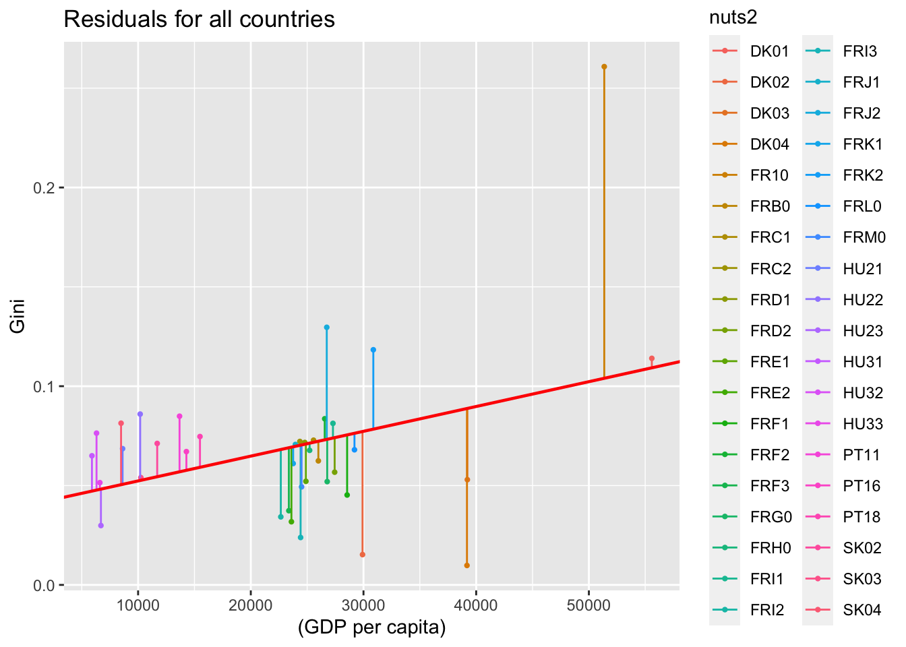
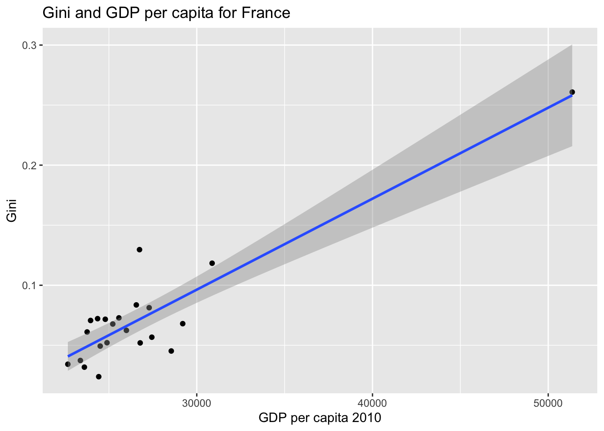

Assignment MSB104
Introduction
In the subject MSB104 econometrics, this year we will hand in an assignment divided into four assignments throughout the semester. The assignments must be written and calculated in the software R. We are group one and the countries that will be representing in our assignment is: Denmark, France, Hungary, Portugal and Slovakia.
1. Download two dataset from Eurostat
The data contains GDP (nama_10r_3gdp) and population (demo_r_pjanaggr3,pi) for countries over the last 20 years, on a NUTS3 level.
To collect the information we need in these two datasets, we created a new dataset which we call gdppop. We collect the information we need to take with us further in the task.
GDP per Capita
To calculate GDP per capita, we use \[ y_i = GDP_i / population_i\] the litle i refers to NUTS3 regions in our countries.
To create an overview of GDP per capita in our NUTS3 regions, we use descriptive statistics. A descriptive statistic contains the min and the max values. i.e. the smallest and the highest GDP per capita for the countries. We also can find 1st quartile and 3rd quartile. The first quartile is the observation between the median and the lowest value, and looks at the 25% lowest values from the 75% highest. The median looks at the value that is observed the most times in the middle of the observations. The third quartile is then, naturally enough, the value between the median and the highest value. We have also look at mean which told us what the average observation for all regions was.
in Table 1. we get an overview of GDP, population and gdp per capita for all the NUTS3 regions. We can see that the mean of GDP per capita for all nuts3 regions are 22 676 euro. the smalest value are 4394,85 euro and the highets are 92361,75 euros.
It wasn’t easy to draw any conclusion from the summary in table 1, as we assume that there are large regional inequaties between the regions in the countries we have in our sample.
To get a better picture of the different regions and the opportunity to see if there are regions that stand out. we create summaries per country, we then get a better overview of outliers in the different countries. We also choose to look at a specific year, this to make it easier to compare the countries in a given time period.
To get the result by country, we made a summary of GDP per capita on each country. By creating such a summary for each country, we can get an overview of whether there are major inequality within the various regions. If we find such deviations, we can choose to remove some of our regions in order not to have large inequalities.
Since Hungary and Slovakia have few nuts3 regions we chose to look at them together.
Denmark
Denmark is a small country in Scandinavia,and they don’t have many NUTS3 regions. Kobenhagen is the capital of Denmark, and as we can see above it stand out together with the surrounding region. The region around the capital has had a higher growth. Capital cities are often richer than other regions.
Graph 1
The three Whealties regions in 2010 Denmark are Kobenhagen (DK011), Kobenhagen area (DK012) and Sydjylland (DK032) Table 3. The three least wealtiest regions in Denmark in 2010 are Vest- og Sydjælland (DK022), Bornholm (DK014) and Østsjælland (DK021) Table 4. Denmark has 11 nuts3 regions, it is the capital and the surrounding region that stands out among the richest, in the poor countries it is more even, there is a difference of 30,000 Euro between these three regions.
?@tbl-5 SKAL VI SNAKKE OM SAMMENDRAGET ELLER TA DET BORT
France
France is a country in Western Europe, they also have colonies in other parts of the world. France has the largest land areas in the EU, which we see in the fact that they have over a hundred nuts3 regions.
Since France has so many nuts3 regions, it is not so easy to distinguish the different regions. In Figure 2 the capital Paris stands out. Based on the summary ?@tbl-6, we can see that there is a difference between min and max. If we look more closely at the figures, it is possible to see that the reason may be that France has colonies in other countries that are included. These colonies are located in Africa and South America which has a negative effect on France’s overall GDP. For further research, we have chosen to remove these regions from the data set ?@tbl-7, Figure 3.
After the FRY regions have been removed, we are left with 96 nuts3 regions. The three wealtiest regions in 2010 are Paris (FR101), Hauts-de-seine (FR105) and Rhône (FRK26) ?@tbl-8. Paris og Hauts-de-seine stands out clarly from the other region with a difference of approximately 50,000 Euro GDP pr capita. The three poorest regions in 2010 is Creuse (FRI22), Ariège (FRJ21) and Meuse(FRF32)?@tbl-9. in these regions we find little variation in GDP per capita.
?@tbl-10 SKAL VI SNAKKE OM SAMMENDRAGET ELLER TA DET BORT
Hungary and Slovakia
Hungary and Slovakia are both countries in Central Europe. Both Bratislava and Budapest had good growth until 2008. After that, things went down with Bratislava for a while, while Budapest had a larger increase Figure 4. The other regions in these countries have had more stable growth.
Hungary and Slovakia has 28 regions together. The three whealties in 2010 are Bratislava (SK010), Budapest (HU110) and Trnava (SK021) ?@tbl-11. The capitals of both countries have the richest region. The least wheltiest regions in 2010 are Nògràd(HU313), Szabolcs-Szatmàr-Bereg(HU323)?@tbl-12. We can see that the three poorest regions belong to Hungary. which means that they have a lower GDP per capita than Slovakia in the poorest regions. We see that there is a difference between min and max in the regions of Hungary (HVOR HAR VI DETTE FRA??).
There is a difference of approximately 25,000 Euro between the whealties and poorest regions in Hungary IN 2010. Based on these observations, Bratislava is the richest region, since we do not see any of Slovakia’s regions among the lowest, we can assume that Slovakia has a higher GDP per capita than Hungary has for its inhabitants.
?@tbl-13 SKAL VI SNAKKE OM SAMMENDRAGET ELLER TA DET BORT
Portugal
Portugal is a country in southern Europe. Portugal also has two archipelagos, each representing a different region. We see steady growth in all the regions, all have had a slight decline between 2010-2012, after that there has been an increase. We also see that in Portugal the capital Lisbon stands out as the richest region.
Portugal has 25 regions. The wheltiest REGIONS IN 2010 are Lisboa(PT170), Alentejo Litoral (PT181) and Algarve (PT150)?@tbl-14. We can se that Lisboa has a litle higher GDP pr capita then the rest of the wheltiest regions. The poorest regions IN 2010 are Tãmega e Sousa (PT11C), Alto Tãmega (PT11B) and Beiras e Serra da Estrela (PT16J) ?@tbl-15. There is approximatly 14,000 Euro in GDP per capita, in difference between the wealties and the poorest regions.
In all the countries, we see that it is the capitals that stand out the most and have the highest GDP per capita among their inhabitants. Paris has managed to have the highest GDP per capita and the poorest regions can be found in Hungary.
Descriptive Statistics regional inequity (Gini Nuts2) and discuss briefly if there are noteworthy outliers
Furthermore, we will use the data to calculate population waterproof GDP Ginie coefficients for our countries at a NUTS2 () level.
A Gini coefficient must be between 0 and 1. If it’s 0, it means that there is little inequality, and if it’s closer to 1, it means that there is a greater degree of inequality between rich and poor. We calculate a Gini coefficient by looking at how much wealth and income there is in a country and then how it is distributed among the population. when we have calculated the gini coefficients, we will also run a test on the data we have to see if we find outliers. Outliers are values that are either very high or very low compared to the other data we have.
Gini for all countries all years
[1] 0.2840999| Variable | N | Mean | Std. Dev. | Min | Pctl. 25 | Pctl. 75 | Max |
|---|---|---|---|---|---|---|---|
| gini_n2 | 49 | 0.053 | 0.046 | 0 | 0.015 | 0.072 | 0.261 |
First, we look at all the regions in the selected countries. We have 46 observations. The total Gini for all countries for all years is 0.28. This Gini is for all 5 countries over the last 20 years. We think that it will be a bit “washed away” and will therefore look at each individual country. We can also see that we have ginis that are 0 which means a perfect correlation. We will look at each country to find out why and where there are regions that have ginis that are 0. To look more specifically at the countries, we have chosen to only look at the year 2010.
In the graph above, you can see that there are two regions that have varied quite a bit over the past 20 years. They still stay below 0.025, which shows that there is little difference between rich and poor in these regions. Another region that stands out is DK01. It is a bit further up the graph than the other regions. Although it is not close to 0, there is a greater difference between rich and poor here than in the other regions.
?@tbl-12 ?@tbl-13
In Denmark, the Gini coefficients are between 0 and 0,11. Denmark has a region Nordjylland (DK05) which is an outlier. In this region, no data has been recorded in 2010. Denmark has only five NUTS2 regions, which doesn’t gives us much data to work with.
France
In France, there are so many regions that it is difficult to see the regions properly in the graph above. What is shown well is that the vast majority of regions follow each other evenly by being below 0.1. There are still some that stand out and we can see that FR10 is the highest with a gini of 0.3, while FRJ1 and FRK1 fluctuate quite a bit from 2005 to 2020
?@tbl-14 ?@tbl-15
In France, the Gini coefficients are between 0,02 and 0,26, which shows us that France has a slightly higher gini than Denmark, which means that the inequality is slightly greater in France.France doesn´t have any outliers, after we took away the FRY regions,
Hungary and Slovakia
Hungary and Slovakia have large fluctuations in their regions. One of the regions with the most fluctuations is HU22 where we can see that they are down to a gini of 0.075 in 2012, while in 2016 they are up to a gini of approximately 0.12. Hungary and Slovakia are small countries in Eastern Europe and we assume that this is the reason why there are large fluctuations.
In Hungary, the Gini coefficient are between 0 and 0,08. Hungary has two regions which are outliers Budapest (HU11) and Pest (HU12). Pest and Budapest hasn’t had any data for the periode that we are looking into.
?@tbl-16 ?@tbl-17
In Slovakia,the Gini coefficient are also between 0 and 0,08. Slovakia has on region that is an outliers which are (SK01). It leaves only Slovakia with three regions from which we obtain data.
Portugal
In the graph for Portugal, we can see that the Gini in several of the regions has been declining over the past 20 years. That is to say, the differences between rich and poor have narrowed over the years. PT18 stands out somewhat in that there are strong fluctuations over the years.
In Portugal, the Gini coefficient are between 0 and 0,08. Portugal has four regions, Algarve (PT15) Lisboa(PT17), Regiäo Autònoma dos Acores (PT20) and Regiäo Autònoma da Madeira (PT30). Regiäo Autònoma dos Acores and Regiäo Autònoma da Madeira are both archipelagos belonging to Portugal which may be the reason why they are outliers. Portugal doesn’t have many NUTS 2 regions, and when four of them have no value, there is not much confidence in the result we get.
Discuss briefly if there are noteworthy outliers
To summarize what has been done in assignment 1, we have calculated GDP per capita for all the countries combined and per country we have been given. We saw that when we collected all the countries we got 22,805.13 Euros in GDP per capita. Denmark had a significantly higher GDP per capita than the other countries. Hungary had the lowest with only 8781.69. France has colonies in other continents, we chose to remove these regions, this so that GDP would not be affected by these regions that belong to others continents.
When we look at outliers for our countries, we can not find any outliers in France, but we do find in all the other countries. All the regions that are outliners are regions that have only one province, in Hungary, Slovakia and Portugal (HU11, HU12, SK01, PT15 and PT 17) the outliers are linked to the capitals. Capitals are often large areas, which only have one region. Portugal also has two island groups (PT20 and PT30) that come up as outliers, these are small regions. The last region that has outliners can be found in Denmark (DK05), this is a small region.
Assignment 2
At the second assigment we are looking at growth and inequity. We are going to estimate the effect if regional development on regional inequality, for the year 2010. Then we will disuse the goodness of fit of our estimated model. We will plot the relationship between regional development and regional inequality and the fitted line corresponding to our estimate. We are also going to plot the residuals against the predicted values of our model. There will be a discussion about the classical assumptions OLS in light of our data and plots and other determinants of inequity.
We will also go back on Eurostat´s webpages and download EurostatLinks to an external site. It will be for our subset of countries regional (NUTS2, j) data related to transport infrastructure, education and demographics. We are suppose to select on variable per category that we would like to explore further in there relationship to regional inequality. We will try to estimate a multiple linear regression model with our new variables for 2010 and give a small interpretation of our findings. In the end we will discuss the overall fit of our model and the inference related to our findings.
Data set:
We will start the assignment 2 with getting the data set from Eurostat. We want to look at the amount of people who have higher education in the education data set and how many motorways there is in kilometers when we look in the transport dataset. In the demographic data set we want to look at the life expectancy age.
Growth and inequity
In this assignment, we will look at growth and inequity in the countries at Nuts2 level.
Before we go further we want to make new variables for the data set. Moving forward we will also make linear models (lm) and a form of regression that is simple. A simple regression model will show us the relationship between two variables. By using this model we can find the Y value when X = 0 (R for everyone s. 265).
The gini value goes from 0 to 1. Where 0 is a perfect equality and 1 is inequality. When the gini is 0, it is likely to believe there is missing som data for 2010. Further we will use filter to take away the gini´s who are zero.
In this ggplot, we can see how the Gini is distributed per country. We can see that France has a point that stands out from the others, while the other countries have most of their points between 0 and 0.1. We have to be observant about that the countries Denmark, Hungary, Portugal and Slovakia don’t have so many observations after we divided the countries into Nuts2 levels, that´s why we choose to only look at France by itself and all the countries together when we move forward in the assignment.
Estimate the effect of regional development on regional inequality GINI for the year 2010
When we calculate regional development against regional inequality, we use the values we have found in Gini and GDP per capita. To estimate the effect between a regional development and regional inequality we can use the formula:
\[ Regional inequality_i = \beta_1 + \beta_2Regional development_i+u_i\] This equation tells us what the regional inequality will be when the regional development is = 0 The slope of the curve will show us how much inequality will change for each increase in development. If we increase regional development by 1, regional inequality will increase by 1.
In this ggplot we look at the relationship between Gini and GDP per capita in 2010 for all countries. We see in the graph that we have points that are above and below the regression line. There are two points on the right that stand out significantly.
| Denmark | France | Hungary_Slovakia | Portugal | Total | |
|---|---|---|---|---|---|
| Const. | -11806.326 | -13096.883 *** | 4054.608 | 13294.565 | 3983.460 *** |
| (5781.918) | (2225.178) | (2550.306) | (12829.967) | (1429.894) | |
| gdp_per_capita | 0.405 * | 0.758 *** | 0.293 | -0.396 | 0.125 ** |
| (0.138) | (0.081) | (0.299) | (0.885) | (0.056) | |
| N | 4 | 22 | 9 | 3 | 38 |
| R2 | 0.813 | 0.814 | 0.121 | 0.167 | 0.122 |
| Note): *** p < 0.01; ** p < 0.05; * p < 0.1 T statistics in brackets. | |||||
When we look at the table above we can see the impact regional development (X) has on regional inequality (Y). This means how much an increase in X will mean for an increase in Y. Portugal is the only country that has a negative impact. We will take a closer look at this country by country. From this and earlier observations we choose to remove Paris from the France2010 dataset.
Discuss the goodness of fit of our estiamted model
When we look at the simple regression that we have done, it is R2 that can help us explain whether the variables have any relationship with each other. R2 tells us how much spread we have in the independent variable. The value in R2 can be between 0 and 1. When R2 is 1 it tells us that the independent variable has all the influence on the dependent variable. If it is 0, the independent variable has no influence on the dependent variable [@Forskningsmetode] (Forskningsmetode - s.345). We can see that Denmark and France have a high R2 value, Denmark with 0,813 and France with 0,814. Denmark only has 4 observations, which tells us that we cannot completly trust this result. France, on the other hand, has 22 observations, the more observations the better outcome of the result .
`geom_smooth()` using formula 'y ~ x'
Plot the residuals against the predicted values of our model
When we have carried out a regression analysis, we get a line that gives us an overview of where the best hits are made. Residuals show the distance to the best fit line. There can be both positive and negative residuals. If the value is above the line it is positive and if it is below the line it is negative.

When we look at all the countries together, we can see that the regression line has both positive and negative hits on the line. We can also se that the regions in each country is close to eachother except from France and Denmark which are a little more spread out on the line.

As we said earlier we are now only looking at France because it has 21 observations (when we remove Paris) and are more trustworthy then the others. We are also looking at all countries together. When we look at the graph for all the countries and at the one for France, we can see in both graphs that there are some of France´s regions that stands out.The best is when the points are on the line, but as we can see above most of the regions are above or below the line which means there is a large variation between the regions. In the graph, we can also see that France has a steeper curve than if we look at all the countries together. With a steeper curve, one must have more GDP to increase the Gini.
Discuss the classical assumptions OLS in light of your data and plots
For linear regression there are seven OLS assumptions that are classical. To produce the the best estimates we usually use the first six assumptions.
- Assumption 1: The regression model is linear in the coefficients and the error term When we look at all the countries it is close to linear, but when we look at France who have the most nuts2 regions, the regions either is above or under the line.
- Assumption 2:The error term has a population mean of zero We can see that there are variations in the X variable both in France and in all the countries combined, which may indicate that we have fulfilled the second requirement for OLS
- Assumption 3:All independent variables are uncorrelated with the error term The third assumption is about having a random dataset, even if we have made changes such as removing regions in France, we will still say that we have a random dataset based on the population.
- Assumption 4:Observations of the error term are uncorrelated with each other
- Assumption 5:The error term has a constant variance (no heteroscedasticity) When we look at the graph for France the line is not flat at all, which means it is heteroscedasticity. If the line had been flat it would have been homoscedasticity.
- Assumption 6:The error term is normally distributed (optional)
Other determinants of inequity
We have chosen to look at km, education and life expectancy to see if there are other determinants of inequity. We want to see what the new variables have to say on the Gini.
Estimate a multiple linear regression model with you new variables for 2010 and give a small interpretation of your findings.
In a multiple linear regression model, we use several variables to see the effect of an increase in gini (Y). We can use the formula:
\[ Y_i = \beta_0 + \beta_1X_{1i} + \beta_2X_{2i}+... + \beta_kX_{ki}+u_i \]
| Model 1 | Model 2 | Model 3 | Model 4 | |
|---|---|---|---|---|
| Const. | -6263.825 | -7875.226 | -74859.196 | -57934.922 |
| (7685.735) | (6935.886) | (48460.099) | (54467.088) | |
| gdp_per_capita | 0.610 ** | 0.514 * | 0.502 * | 0.336 |
| (0.245) | (0.291) | (0.268) | (0.321) | |
| Education | -99.006 | -58.445 | ||
| (95.904) | (102.394) | |||
| Motorway | 2.004 | 1.865 | ||
| (2.045) | (2.053) | |||
| Lifeexp | 838.106 | 693.057 | ||
| (632.397) | (685.855) | |||
| N | 21 | 21 | 21 | 21 |
| R2 | 0.344 | 0.340 | 0.367 | 0.412 |
| Note: *** p < 0.01; ** p < 0.05; * p < 0.1 T statistics in brackets. | ||||
France has 21 observations, such tests give the best results the more observations we have. R2 tells us something about whether the variables have an influence on the dependent variable. if the values have an increase for each new model, this tells us that we have a connection. if the value decreases, they will say that there is no connection between these variables.In our case, we can see that R2 rises right up to model 4. This may indicate that the combination of GDP per capita and life expectancy has no effect on Gini. We end up at 0.412 on R2 which says that 41,2% of the change in Gini can be attributed to these variables. in model 1 we can see that it is education that has the highest influence on the Gini, we also see this again in model 3. In the models we have life expectancy, it is this that has the highest influence on the Gini.In the 7th model where we have all the variables. We can see that it is Education and Lifeexpectancy that have the highest effect on the Gini.
Table 21 Table 22 Table 23
Discuss the overall fit of your model
France is the only country with many observations in 2010, and it will probably give us the best basis for looking at whether the model fits our model or not. We want to find out whether education and the number of km have an effect on inequalities in France and whether these variables have a connection to how wealthy the various regions are.We want to see if life expectancy age and education have an influence on gini and why this is the case. We will also take a closer look at whether road has an effect on gini.
Assignment 3
In this part we are going to test if the effect of development is significantly different for different subsets of countries in your data set. Then we will look at alternative functional forms (e.g.log, cubical estimates) of our previous estimates on the relationship between regional development yi on regional inequality GINIWj. We will make arguments for two forms that might fit the data better and plot the corresponding scatter plots with the fitted estimate line. We are suppose to report the related estimates and give a verbal interpretation of our estimate coefficients. We will also test for heteroskedasticity in the two new and in the old model. We will discuss if we can interpret the estimates as casual and suggest potential remedies for eventual problems.
Test if the effect of development is significantly different for different subsets of countries in your data set
| Only France | No France | Interaction | |
|---|---|---|---|
| (Intercept) | -13096.883 *** | 6367.860 *** | 6367.860 *** |
| (2225.178) | (1097.254) | (960.098) | |
| gdp_per_capita | 0.758 *** | -0.006 | -0.006 |
| (0.081) | (0.048) | (0.042) | |
| Fra | -19464.744 *** | ||
| (2687.672) | |||
| gdp_per_capita:Fra | 0.763 *** | ||
| (0.100) | |||
| N | 22 | 16 | 38 |
| R2 | 0.814 | 0.001 | 0.675 |
| F statistic | 87.679 | 0.015 | 23.510 |
| P value | 0.000 | 0.905 | 0.000 |
| Note: *** p < 0.01; ** p < 0.05; * p < 0.1 T statistics in brackets. | |||
To test the effect of differences for the different subgroups of countries, we have created the dummy variable. In a regression we cannot use country as a variable, but if we turn the countries into dummy variables, we get opportunities to filter on the countries. We have converted France to 1 and the remaining countries to 0. We can then look at the regions in France as one and the other countries as another one. Then we can see if there are differences between those who are living in France and for those who lives in the other countries. We have 38 observations in total, 22 of the observation belongs to France and 16 og the observations belongs to the other countries. It is not a lot of observations in total.
Only France shows the effect for France only. No France shows the effect for the other countries and will not inclued France. Interaction shows for all countries and iteration of development with France dummy. Using this, it is possible to see that Only France has a very high R2, and they have three significant stars, which means that an increase in Gini can be explained by an increase in GDP per capita. When we look at No France, they also have three stars on the significance level when it comes to Gini, but not on GDP per capita. Which means there are not a connection between an increase on Gini and an increase in GDP per capita. We also see that No France has a very low R2, which also supports that the correlation between these variables is small. Interaction has a high significant level on several of the variables. The R2 is 0.675 which means that part of the increase in Gini can be attributed to GDP per Capita.
In Only France and the interaction we can se that we have a P value that is 0. It is lower than all of our signifikant levels. We therefore have to retain the null hypothesis. But we can doubt that the P value is zero. It is very unlikely, and we can´t say that there is any pattern, but rather a random coincidence which means that we get zero in P value.
No France have a P value that is 0,905. That is a high value, and we therefore reject the null hypothesis. It is possible to cast doubt on whether this is a pattern or a random connection. As mentioned earlier, we do not have a lot of observations, and that is something that can have an influence on the result.
Explore alternative functional forms (e.g.log, cubical estimates) of your previous estimates on the relationship between regional development yi on regional inequality GINIWj. Give an argument for two forms that might fit the data better.
| Only France (log) | No France (log) | Interaction (log) | |
|---|---|---|---|
| (Intercept) | -258882.263 *** | 9642.386 | 9642.386 |
| (30219.115) | (9489.621) | (8515.883) | |
| log(gdp_per_capita) | 26135.269 *** | -355.242 | -355.242 |
| (2966.852) | (995.571) | (893.415) | |
| Fra | -268524.649 *** | ||
| (34230.686) | |||
| log(gdp_per_capita):Fra | 26490.511 *** | ||
| (3375.422) | |||
| N | 22 | 16 | 38 |
| R2 | 0.795 | 0.009 | 0.661 |
| F statistic | 77.600 | 0.127 | 22.060 |
| P value | 0.000 | 0.727 | 0.000 |
| Note: *** p < 0.01; ** p < 0.05; * p < 0.1 T statistics in brackets. | |||
Code
gdppop2010 <- gdppop2010
lm.26 = lm(Gini2 ~ I(log(gdp_per_capita)), filter(gdppop2010, Fra==1))%>%
coeftest(vcov = hccm, save = TRUE)
lm.27 =lm(Gini2 ~ log(gdp_per_capita) + I(log(gdp_per_capita)^2), filter(gdppop2010, Fra==1)) %>%
coeftest(vcoc = hccm, save= TRUE)
lm.28 = lm(Gini2 ~ log(gdp_per_capita)+ I(log(gdp_per_capita)^2)+I(log(gdp_per_capita)^3), filter(gdppop2010, Fra==1)) %>%
coeftest(vcoc = hccm, save= TRUE)
#Gen Table
huxreg(
list("Only France (log)" = lm.26, "Only France (log) ^2" = lm.27, "Only France (log) ^3" = lm.28),
statistics = c("N" = "nobs",
R2 = "r.squared", "F statistic" = "statistic",
"P value" = "p.value"),
stars = c("*" = 0.1, "**" = 0.05, "***" =0.01),
note = "Note: {stars} T statistics in brackets."
)| Only France (log) | Only France (log) ^2 | Only France (log) ^3 | |
|---|---|---|---|
| (Intercept) | -258882.263 *** | 1405392.925 | -83796534.882 |
| (83204.006) | (1181567.496) | (124011020.512) | |
| I(log(gdp_per_capita)) | 26135.269 *** | ||
| (8202.368) | |||
| log(gdp_per_capita) | -293361.980 | 24331400.013 | |
| (226777.797) | (35840294.274) | ||
| I(log(gdp_per_capita)^2) | 15321.755 | -2355868.392 | |
| (10874.430) | (3451113.019) | ||
| I(log(gdp_per_capita)^3) | 76071.984 | ||
| (110717.260) | |||
| N | 22 | 22 | 22 |
| R2 | 0.795 | 0.814 | 0.819 |
| F statistic | 77.600 | 41.704 | 27.187 |
| P value | 0.000 | 0.000 | 0.000 |
| Note: *** p < 0.01; ** p < 0.05; * p < 0.1 T statistics in brackets. | |||
We will now make two new tests with different arguments, just to see if we can get data that fits better. In both tests we choose to do a level log test. In the first alternative model, we used Log on the variables. Log means that large variations in the observations will have less impact on the results. Only France still has a high significant level of its variables, It is easy to see that Log(GDP per capita) has increased a lot from GDP per capita in the model above (table above). R2 has dropped a bit but it is still high. No France no longer has a significant level on its variables. And it has a small increase in R2. Interaction no longer has a significance level on its Gini.
In the second alternative, we raised Log (GDP per capita) in the second and third squares on France’s dummy variables. It produces a change in Log (GDP per capita) but R2 is the same in all models. Everyone have three stars at the significant level.
Code
#plot
filter(gdppop2010, Fra==1) %>%
ggplot(aes(x = log(gdp_per_capita), y = Gini2)) +
geom_point(color = "darkslategray", size = 3) +
stat_function(color = "red", fun=function(x) lm.28[[1,1]]+lm.28[[2,1]]*x+lm.28[[3,1]]*x*x+lm.28[[4,1]]*x*x*x)+
theme_gray () + xlab("predicted values") + ylab("residuals")
In this Scatterplott there are 22 observations in France. The X axis shows the predicted variable for log GDP per capita. The Y axis shows the residual for Gini. Most of the points are gathered in the lower part of the figure and we can see there are one point that stands out. We suspect that the point that stands out is Paris as this has been shpwn in previous tests, but we cannot say that for sure.
Test for heteroskedasticity in the two new and the old model.
When we are going to test for heteroscedasticity, we will use the Breusch-Pagan test. This test takes into account that the errors are normally distributed [@Wooldridge].
Code
#Estimate
reg <- lm(Gini2 ~ (gdp_per_capita),data = gdppop2010)
# Breusch-Pagan test F-Test (LM estimator)
bptest(reg)$p.value BP
0.003548012 The first test is Gini and GDP per capita. We do get a BP value of 0.0035. This is lower than 0.01. We then have to keep \(H_0\)
Code
#Estimate
reg<-lm(Gini2 ~ log(gdp_per_capita), filter(gdppop2010, Fra==1))
# Breusch-Pagan test F-Test (LM estimator)
bptest(reg)$p.value BP
0.6720791 The second test is Gini and log GDP per capita and we have filtered on France. We got a BP value of 0.672. This is higher than 0.10. We can then not reject \(H_0\). Hence we facing Heteroskedasticity!
Code
#Estimate
reg <- lm(Gini2 ~ log(gdp_per_capita),data = gdppop2010)
# Breusch-Pagan test F-Test (LM estimator)
bptest(reg)$p.value BP
0.04131447 The third test is Gini and log GDP per capita. We got a BP value of 0.0413. That is higher than 0.01. Then we can´t reject \(H_0\) With a P-value = 0,04131447 we can not reject \(H_0\) (homoskedasticity).
Discuss if we can interpret the estimates as causal.
To estimate the causal effect, we can carry out regression models. Just to see if the variables we are working with have an effect on each other. In this section, we have carried out three different tests. Based on the tests we cannot say with certainty that an increase in GDP per capita has an effect on the Gini. Based on some of the tests,there are very likely that it has an effect on the Gini. Anyhow, we cannot say if it is the only reason.
In this assignment, we have chosen to look at Gini and GDP per capita. In most of the tests we have carried out, we have rejected \(H_0\), which may indicate that an increase in Gini and GDP per capita have a connection. We have not found anything to suggest that increases in these variables are only dependent on each other. Therefore we think it is fair to say that it is very unlikely that these increases are only dependent on each other.
Suggest potential remedies for eventual problems.
Through the assignment, we have seen that there are differences between the countries when it comes to GPD and GINI, but also the size of the countries and population. According to our observations, Denmark, Portugal and France appear as wealthier countries, while Hungary and Slovakia are at the other end of the scale. All these countries are part of the EU, so if they had chosen to invest in a region for development, this could have had a greater effect on the poor countries than it had on the wealthier countries.
In the thesis, we have looked at the variables life expectancy, education and kilometres/transport. The effect of these variables have varying results. Other variables we can look at that may have an effect on the Gini are the different health benefits in the countries, wage levels and unemployment. If there is high unemployment in the countries, we imagine that this could have a negative effect on the Gini.
Assignment 4
Penal Estimates
Use your entire data set to estimate the effect of regional development yj on regional inequality GINIWj in a penal setup. Present estimates that contain the following fixed effects separately and jointly:
country fixed effects, year fixed effects NUTS 2 fixed effects (Please ignore for this assignment the alternative determinants from assignment 2)
Code
penaldata %>%
plm(Gini3 ~ gdp_per_capita + I(gdp_per_capita^2), data = ., index = c("nuts2"), model="within", effect ="twoways") %>% coeftest(vcov. = vcovHC, type = "HC1", save = TRUE)
t test of coefficients:
Estimate Std. Error t value Pr(>|t|)
gdp_per_capita -3313.94 9051.73 -0.3661 0.7144
I(gdp_per_capita^2) 189.46 462.73 0.4094 0.6823Code
penaldata %>%
plm(Gini3 ~ gdp_per_capita + I(gdp_per_capita^2), data = ., index = c("Year"), model = "within", effect = "twoways") %>% coeftest(vcov. = vcovHC, type = "HC1", save = TRUE)
t test of coefficients:
Estimate Std. Error t value Pr(>|t|)
gdp_per_capita -55148.03 6535.97 -8.4376 < 2.2e-16 ***
I(gdp_per_capita^2) 2852.28 347.49 8.2082 7.519e-16 ***
---
Signif. codes: 0 '***' 0.001 '**' 0.01 '*' 0.05 '.' 0.1 ' ' 1Code
penaldata %>%
plm(Gini3 ~ gdp_per_capita + I(gdp_per_capita^2), data = ., index = c("nuts2", "Year"), model="within", effect ="twoways") %>% coeftest(vcov. = vcovHC, type = "HC1", save = TRUE)
t test of coefficients:
Estimate Std. Error t value Pr(>|t|)
gdp_per_capita -4854.01 9105.11 -0.5331 0.5941
I(gdp_per_capita^2) 277.10 470.65 0.5888 0.5562Code
penaldata %>%
plm(Gini3 ~ gdp_per_capita + I(gdp_per_capita^2), data = ., index = c("nuts0", "Year"), model="within", effect ="twoways") %>% coeftest(vcov. = vcovHC, type = "HC1", save = TRUE)Warning in pdata.frame(data, index): duplicate couples (id-time) in resulting pdata.frame
to find out which, use, e.g., table(index(your_pdataframe), useNA = "ifany")
t test of coefficients:
Estimate Std. Error t value Pr(>|t|)
gdp_per_capita -142383.6 53208.3 -2.6760 0.007577 **
I(gdp_per_capita^2) 7555.6 2908.1 2.5981 0.009516 **
---
Signif. codes: 0 '***' 0.001 '**' 0.01 '*' 0.05 '.' 0.1 ' ' 1Use the feedback you obtained for Assignment one to three to improve and shorten your previous assignments.
Write a consistent document that discusses the hypothesis that we can observe a significant and positive effect of development on regional inequality for your set of countries.
Your final submission must have less than 10.000 words, three tables and five figures. Appendix and references not included.
Extra
info
A slope coeffisient tells us the expected change in Yi when Xi increases by one
(https://www.datasciencecentral.com/7-classical-assumptions-of-ordinary-least-squares-ols-linear/)
r BNP2010 %>% filter(Year==2010 & nuts0==“DK”) %>% ggplot(aes(x =edu, y=Gini, fill=id_nuts2, color=id_nuts2)) + geom_point(lwd = .8) + labs(x = “Education”, y = “Gini”)
lm(Gini2 ~ Edu, data=France2010)%>% tidy%>% kable(., digits=2)
Lecture
r reg <- lm(gdp_n2 ~ lea + gdp_per_capita + Edu, data = gdppop2010) coeftest(reg, )
r reg2 <- lm(log(gdp_n2) ~ log(lea) + log(gdp_per_capita) + log(Edu), data = gdppop2010) coefficients(reg,vcov=hccm )
Bibliography
Appendix
Assignment 1
| Variable | N | Mean | Std. Dev. | Min | Pctl. 25 | Pctl. 75 | Max |
|---|---|---|---|---|---|---|---|
| GDP | 163 | 15752.566 | 22785.25 | 900.58 | 3844.17 | 18502.14 | 196621.1 |
| Population | 163 | 587254.816 | 474888.351 | 42255 | 268026 | 701432 | 2808205 |
| gdp_per_capita | 163 | 22587.719 | 12242.241 | 4394.853 | 14907.009 | 26876.639 | 92361.757 |
| GDP_per_Capita |
|---|
| 2.26e+04 |
Graph 1

| Year | Region | gdp_per_capita |
|---|---|---|
| 2010 | DK011 | 6.47e+04 |
| 2010 | DK012 | 6.38e+04 |
| 2010 | DK032 | 4.27e+04 |
| Year | Region | gdp_per_capita |
|---|---|---|
| 2010 | DK022 | 2.93e+04 |
| 2010 | DK014 | 2.97e+04 |
| 2010 | DK021 | 3.15e+04 |
Year Region gdp_per_capita
Min. :2010 Length:11 Min. :29276
1st Qu.:2010 Class :character 1st Qu.:32793
Median :2010 Mode :character Median :36862
Mean :2010 Mean :40570
3rd Qu.:2010 3rd Qu.:41504
Max. :2010 Max. :64695 Graph 2

Population gdp_per_capita
Min. : 73851 Min. : 8292
1st Qu.: 290938 1st Qu.: 21721
Median : 523771 Median : 24361
Mean : 643505 Mean : 26286
3rd Qu.: 818596 3rd Qu.: 27871
Max. :2606234 Max. :116235 Graph 3

| Year | Region | gdp_per_capita |
|---|---|---|
| 2010 | FR105 | 9.24e+04 |
| 2010 | FR101 | 8.76e+04 |
| 2010 | FRK26 | 4.1e+04 |
| Year | Region | gdp_per_capita |
|---|---|---|
| 2010 | FRI22 | 1.82e+04 |
| 2010 | FRJ21 | 1.88e+04 |
| 2010 | FRF32 | 1.93e+04 |
Year Region gdp_per_capita
Min. :2010 Length:96 Min. :18155
1st Qu.:2010 Class :character 1st Qu.:21951
Median :2010 Mode :character Median :24289
Mean :2010 Mean :26566
3rd Qu.:2010 3rd Qu.:28190
Max. :2010 Max. :92362 Graph 4

| Year | Region | gdp_per_capita |
|---|---|---|
| 2010 | SK010 | 3.27e+04 |
| 2010 | HU110 | 2.19e+04 |
| 2010 | SK021 | 1.42e+04 |
| Year | Region | gdp_per_capita |
|---|---|---|
| 2010 | HU313 | 4.39e+03 |
| 2010 | HU323 | 5.38e+03 |
| 2010 | HU332 | 5.72e+03 |
Year Region gdp_per_capita
Min. :2010 Length:28 Min. : 4395
1st Qu.:2010 Class :character 1st Qu.: 6629
Median :2010 Mode :character Median : 8018
Mean :2010 Mean : 9561
3rd Qu.:2010 3rd Qu.:10106
Max. :2010 Max. :32670 Graph 5

| Region | gdp_per_capita |
|---|---|
| PT170 | 2.41e+04 |
| PT181 | 2.14e+04 |
| PT150 | 1.7e+04 |
| Region | gdp_per_capita |
|---|---|
| PT11C | 9.92e+03 |
| PT16J | 1.05e+04 |
| PT11B | 1.08e+04 |
Region gdp_per_capita
Length:25 Min. : 9919
Class :character 1st Qu.:12449
Mode :character Median :14708
Mean :14558
3rd Qu.:15762
Max. :24120 Graph 6

| Year | nuts2 | gini_n2 |
|---|---|---|
| 2010 | DK01 | 0.114 |
| 2010 | DK02 | 0.0153 |
| 2010 | DK03 | 0.053 |
| 2010 | DK04 | 0.00978 |
| 2010 | DK05 | 0 |
| nuts2 |
|---|
| DK05 |
Graph 7

| Year | nuts2 | gini_n2 |
|---|---|---|
| 2010 | FR10 | 0.261 |
| 2010 | FRB0 | 0.0624 |
| 2010 | FRC1 | 0.0728 |
| 2010 | FRC2 | 0.0722 |
| 2010 | FRD1 | 0.0717 |
| 2010 | FRD2 | 0.0567 |
| 2010 | FRE1 | 0.0521 |
| 2010 | FRE2 | 0.0318 |
| 2010 | FRF1 | 0.0452 |
| 2010 | FRF2 | 0.0836 |
| 2010 | FRF3 | 0.0373 |
| 2010 | FRG0 | 0.052 |
| 2010 | FRH0 | 0.0677 |
| 2010 | FRI1 | 0.0813 |
| 2010 | FRI2 | 0.0342 |
| 2010 | FRI3 | 0.0239 |
| 2010 | FRJ1 | 0.0707 |
| 2010 | FRJ2 | 0.13 |
| 2010 | FRK1 | 0.0611 |
| 2010 | FRK2 | 0.118 |
| 2010 | FRL0 | 0.068 |
| 2010 | FRM0 | 0.0493 |
| nuts2 |
|---|
Graph 8

| Year | nuts2 | gini_n2 |
|---|---|---|
| 2010 | HU11 | 0 |
| 2010 | HU12 | 0 |
| 2010 | HU21 | 0.0686 |
| 2010 | HU22 | 0.086 |
| 2010 | HU23 | 0.0299 |
| 2010 | HU31 | 0.065 |
| 2010 | HU32 | 0.0764 |
| 2010 | HU33 | 0.0515 |
Table 17
| Year | nuts2 | gini_n2 |
|---|---|---|
| 2010 | SK01 | 0 |
| 2010 | SK02 | 0.0712 |
| 2010 | SK03 | 0.054 |
| 2010 | SK04 | 0.0814 |
| nuts2 |
|---|
| HU11 |
| HU12 |
| SK01 |
Graph 9

| Year | nuts2 | gini_n2 |
|---|---|---|
| 2010 | PT11 | 0.0849 |
| 2010 | PT15 | 0 |
| 2010 | PT16 | 0.0671 |
| 2010 | PT17 | 0 |
| 2010 | PT18 | 0.0747 |
| 2010 | PT20 | 0 |
| 2010 | PT30 | 0 |
| nuts2 |
|---|
| PT15 |
| PT17 |
| PT20 |
| PT30 |
Assignment 2
Graph 10

Graph 11
Estimate the effect of regional development on regional inequality GINI for the year 2010
`geom_smooth()` using formula 'y ~ x'
Graph 12
Discuss the classical assumptions OLS in light of your data and plots


Graph 13


Plots the residuals against the predicted values of our model
Graph 14
`geom_smooth()` using formula 'y ~ x'
Graph 15
`geom_smooth()` using formula 'y ~ x'
Graph 16
`geom_smooth()` using formula 'y ~ x'
Table 21
| Model 1 | Model 2 | Model 3 | Model 4 | Model 5 | Model 6 | |
|---|---|---|---|---|---|---|
| gdp_per_capita | 0.613 | 0.495 | -1.028 | 0.416 | 0.712 | 0.501 |
| (0.520) | (0.205) | (NaN) | (0.107) | (NaN) | (NaN) | |
| Education | 544.974 | -5620.249 | 773.104 | |||
| (1279.489) | (NaN) | (NaN) | ||||
| Motorway | 20.253 | 160.693 | 19.432 | |||
| (29.146) | (NaN) | (NaN) | ||||
| Lifeexp | -2527.220 | -2821.860 | -2480.632 | |||
| (1652.517) | (NaN) | (NaN) | ||||
| const. | -34060.858 | -20252.333 | 150689.366 | 187990.794 | 179714.043 | 176204.288 |
| (52787.904) | (13885.965) | (NaN) | (130721.394) | (NaN) | (NaN) | |
| N | 4 | 4 | 4 | 4 | 4 | 4 |
| R2 | 0.841 | 0.874 | 1.000 | 0.944 | 1.000 | 1.000 |
| Note: *** p < 0.001; ** p < 0.01; * p < 0.05 T statistics in brackets. | ||||||
In Denmark, we can see that models 1, 2 and 4 all have a negative effect when it comes to the variables being dependent on each other. in model 5, where we look at education and life expectancy, we can see a positive effect. the same in model 6 with motorway and life expectancy. when we look at R2, this is high on model 3. but since we only have 4 observations from Denmark, it is not possible to draw any conclusion as to whether these variables are relevant to each other.
Table 22
| Model 1 | Model 2 | Model 3 | Model 4 | Model 5 | Model 6 | |
|---|---|---|---|---|---|---|
| gdp_per_capita | 0.432 | 0.209 | 0.889 | 0.399 | 0.463 | 0.403 |
| (0.551) | (0.308) | (0.519) | (0.700) | (0.807) | (0.700) | |
| Education | 56.488 | 317.996 | 51.957 | |||
| (182.446) | (205.217) | (214.170) | ||||
| Motorway | -8.937 | -19.707 | -9.369 | |||
| (8.544) | (10.367) | (9.368) | ||||
| Lifeexp | -319.675 | -128.476 | -596.659 | |||
| (1873.970) | (2187.748) | (1894.324) | ||||
| const. | 1919.114 | 6237.527 | -3153.585 | 27039.266 | 11327.858 | 49242.688 |
| (7418.924) | (3282.168) | (6742.626) | (134766.511) | (160421.754) | (136582.962) | |
| N | 9 | 9 | 9 | 9 | 9 | 9 |
| R2 | 0.134 | 0.256 | 0.497 | 0.125 | 0.135 | 0.271 |
| Note: *** p < 0.001; ** p < 0.01; * p < 0.05 T statistics in brackets. | ||||||
Again we have chosen to merge Hungary and Slovakia when we are going to do this multiple regression analysis. here we can see that models 4 and 5 have a positive effect on Gini. Model 5, which has education and life expectancy as variables, both values are positive but they have a rather low R2, which means that they do not have such a strong correlation anyway.
Table 23
| Model 1 | Model 2 | Model 3 | |
|---|---|---|---|
| gdp_per_capita | 6.898 | -3.723 | 6.898 |
| (NaN) | (NaN) | (NaN) | |
| Education | 3978.251 | 3978.251 | |
| (NaN) | (NaN) | ||
| Lifeexp | -4768.800 | ||
| (NaN) | |||
| const. | -379852.307 | 443293.670 | -379852.307 |
| (NaN) | (NaN) | (NaN) | |
| N | 3 | 3 | 3 |
| R2 | 1.000 | 1.000 | 1.000 |
| Note: *** p < 0.001; ** p < 0.01; * p < 0.05 T statistics in brackets. | |||
Portugal had no observations on the Motorway, we have therefore removed this variable from these observations. we are then left with three models. and we can see that all the models are positive, model 1 has a higher R2 than model 2 has. while model 3 has a perfect 1. but since we only have 3 observations we cannot put much faith in this R2.